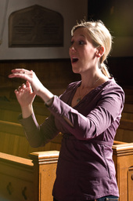

A native of Chatham, Ontario, Sara Brooks received a BMus from Acadia University (2006) and a MMus in piano performance from the University of Ottawa (2008). While completing her master's degree, she had the opportunity to study with choral conductor Laurence Ewashko, serving for two years as both rehearsal pianist and assistant conductor for the University's Calixa-Lavallee ensemble.
Upon graduating, Sara founded the Capital Chamber Choir, a 24-voice ensemble, whose mandate is to promote Canadian Choral repertoire. This ensemble is now in its third full season.
Until Fall 2011, Sara held the position of Director of Music at All Saints' Anglican Church in Sandy Hill. She was also recently invited to work with the Vancouver Chamber Choir under conductor Jon Washburn, at the 31st annual VCC National Symposium. In addition to her new post as Interim Director of Music at the First Unitarian Congregation of Ottawa, Sara is employed as assistant chorus master and assistant conductor for Opera Lyra, Ottawa.
| Soprano | Alto |
|---|---|
|
Vanessa Davies Kaley Duff Cait Hurcomb Julia Keast Amy Leslie Emily McPherson Sarah Ripley Phulesar |
Jaime Ashurst Aura Giles Jessica McClay Whitney O'Hearn Amy Reckling Stephanie Roman |
| Tenor | Bass |
|
Sascha Adler Johnathan Bentley Fletcher Gailey-Snell |
Mark Adams John Alexander Xander Galbreath Michael Griggs Timothy Mott Paul Whiteley |